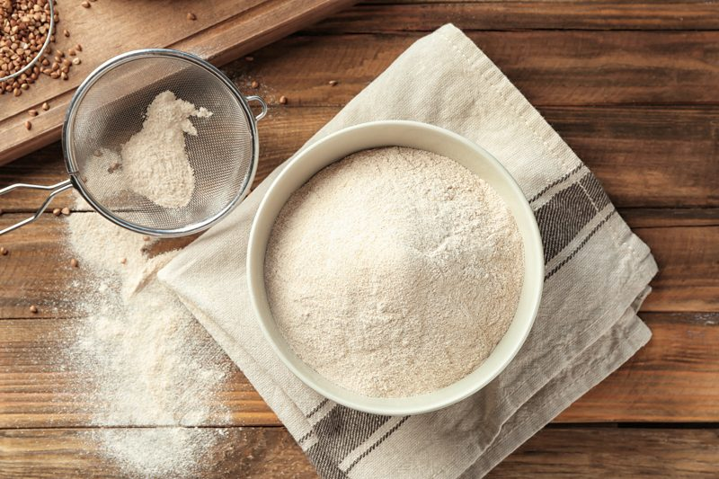
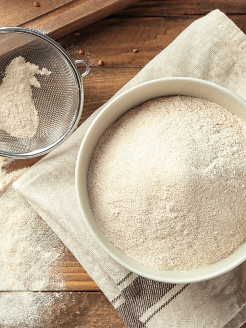

Buckwheat Flour – made from Sprouted Buckwheat
Buckwheat Flour
Contrary to what its name indicates, buckwheat is not a form of wheat. It’s not even a relative to the wheat family. Buckwheat is gluten-free, a good source of protein, contains eight essential amino acids. To read about all the incredible health benefits of buckwheat, check out this site. Today, we are going to learn how to make our own buckwheat flour.

Here is an inspiring story of how a little raw buckwheat sprouted up to be a nutrient-dense flower flour… The story began with 1 cup dry raw buckwheat, and after a short little home-spa soaking treatment, it began to sprout. But lost in the bliss of a day of pampering, it started to retain a little water, as it expanded to robust 2 1/3 cups buckwheat!
The poor little buckwheat decided to lay out in the heat to see if it could shed some of this water weight. It spread itself out in the dehydrator, and after about 4-6 hours of a 115 degrees (F) heat, it reduced itself back to 1 1/4 cups of dehydrated buckwheat. Life comes full circle with that 1 cup of dry raw buckwheat… because after blitzing it to a flour, we are back to the volume of 1 cup flour!
Ok, ok, all silliness put aside… Raw buckwheat flour is a wonderful staple to have ready in your “pantry.” If you are ever in need of a slightly nutty-tasting flour that is silky in texture… this is a great one to use. By sprouting the buckwheat first, it will increase their nutritional properties and digestibility. Out of all the homemade flours that I make, buckwheat is the finest in texture.
Keep in mind that the measurements I provide below are just for basic guidelines. Feel free to use more or less, depends on how much you want to make.

Ingredients:
4 cups dried groats = 3 1/2 cups of flour
Preparation:
- Once the buckwheat has sprouted, spread kernels out on the teflex sheet that comes with the dehydrator.
- If you are worried about the seeds blowing around, you can place a mesh sheet on top. I don’t find this necessary.
- Spread them out as thin as you can so air can get around them.
- Dehydrate at 145 degrees (F) for 1 hour then reduce to 115 degrees (F) for about 4-6 hours or until dry.
- Concerned about drying at 145 degrees for 1 hour, read about it (here).
- Allow them to cool to room temperature.
- To grind to a flour, you can use the dry container that fits that Vitamix or Blendtec, a spice grinder or a coffee grinder.
- Depending on what you use, it will depend on how much you can grind at a time. Small batches may be required. A food processor will break the buckwheat down but not enough to achieve a fine flour.
- If you wish to create a fine flour texture, pass the ground buckwheat through a fine mesh sifter.
- I recommend grinding the buckwheat to flour as needed to preserve freshness.
- Use right away or store the flour in an airtight glass container in your refrigerator for up to 3-4 months.
© AmieSue.com